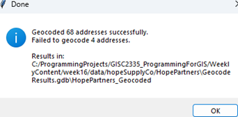
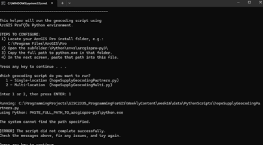

Overview
Hope Supply Co. provided a list of Pantry, Diaper Bank, and Outreach partners without street addresses or coordinates. The project combined Python automation coursework with GIS programming to create a reusable, user-guided geocoding workflow.
Problem
Looking up each organization manually in ArcGIS Pro would be slow and error-prone. The output also needed consistent address fields, X/Y coordinates, and a way to flag uncertain matches rather than silently accepting them.
Context & role
I designed and developed the project as a Dallas College GIS Programming capstone using partner information approved for portfolio use. I created the scripts, launcher, data-ingestion workflow, geocoding steps, and public write-up.
Approach & workflow
- Validate the environment. Confirm the ArcGIS Pro Python interpreter and required license.
- Guide file selection. Use Tkinter prompts for the output location, workbook, and worksheet.
- Prepare the data. Read Excel with pandas and create a typed NumPy array sized for the source strings.
- Geocode the records. Send the table through ArcPy geocoding or the ArcGIS World Geocoder workflow.
- Review the output. Add address and coordinate fields and export matches below the confidence threshold for manual review.
Tools & technologies
Data & inputs
The source workbook contained approved partner organization records. The scripts convert the workbook into an in-memory ArcGIS table and create a final feature class containing available address components and coordinates.
Results
Operational outcome
The workflow prepared 68 partner locations for mapping and replaced an estimated two-hour manual lookup process with an automated run documented at under ten minutes.


Technical challenges
- ArcPy's Excel-to-table behavior required an alternative pandas and NumPy ingestion path.
- Windows path normalization needed explicit handling.
- Workbook sheet selection and empty strings required defensive validation.
- Low-confidence matches needed a visible review path instead of false certainty.
Limitations
The single-location workflow is the most complete implementation. The multi-location variant remains an extension path. Geocoded results require review because organization names can be ambiguous and external geocoding services can return imperfect matches.
Future improvements
- Complete and test the multi-address workflow.
- Add a progress indicator and clearer nontechnical status messages.
- Join relevant public demographic layers for service-gap analysis.
- Package configuration and validation for reuse with other partner lists.